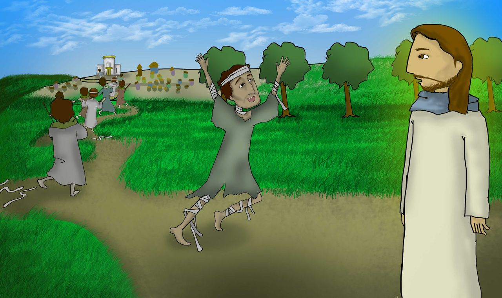

1 · 8:1–4
만질 수 없는 사람을 만지시다
율법에 따르면 환자는 “부정하다, 부정하다” 외치며 진영 밖에서 살아야 했어요(레 13:45–46). 만지는 사람도 부정해졌어요.
예수님은 말씀만으로도 고치실 수 있었지만 굳이 손을 대셨어요. 부정이 예수님께 옮은 것이 아니라 예수님의 이 그에게 옮았어요.
깊이 보기 · 제사장에게 보이라
예수님은 고침받은 사람을 제사장에게 보내 모세의 규례대로 예물을 드리게 하셨어요(레 14장). 공동체로 돌아가는 공식 절차예요. 예수님은 몸뿐 아니라 관계까지 회복하셨어요.